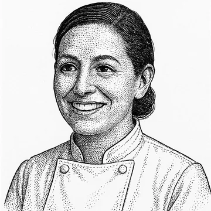
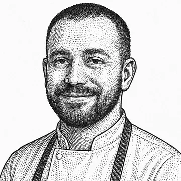
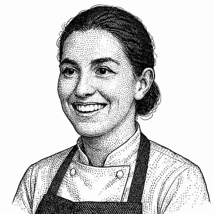
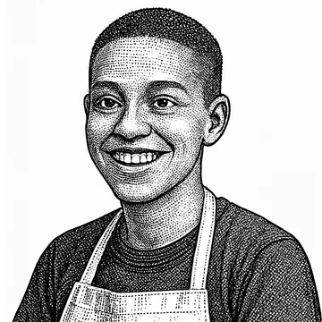
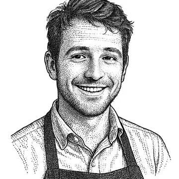

From the card, off the coals.
Welcome to Le Petit Renard. We lit our grill in the old Bridge Cafe — the little clapboard corner-house that has stood at Water and Dover Streets, in the shadow of the Brooklyn Bridge, since the 1790s. We kept the creaking floors and the pressed-tin ceiling, and we cook everything to order over a single fire. Pull up a chair, order off the card, and let us take care of the rest — one plate, one table, one perfect bit of timing at a time.
— Élise Marchand, Chef-owner
Opened in 2017 in the old Bridge Cafe building at the foot of the Brooklyn Bridge, Le Petit Renard started as a six-stool counter built around a single wood-fired grill. The line never grew much wider — the room did. The team kept the one-grill, one-range setup on purpose: it forces discipline at the pass and keeps the menu honest. The house obsession with ticket timing eventually turned into a side project to let an algorithm sequence the board.
279 Water Street, at Dover Street · South Street Seaport · New York, NY
Le Petit Renard lives in the old Bridge Cafe — the little clapboard corner-house at 279 Water Street, tucked beneath the Brooklyn Bridge at the edge of the South Street Seaport. The wood-frame building dates to the 1790s and spent two centuries as a grocery, a saloon, and finally what was long reputed to be one of New York's oldest drinking houses — until floodwater from Hurricane Sandy shut its doors in 2012. We took the corner on, kept the creaking floors and the pressed-tin ceiling, and lit the grill again.

Élise Marchand
Chef-owner
Élise trained under Jean-Pierre Vasseur at Le Bristol in Paris, then staged at elBulli under Ferran Adrià before coming home to open Le Petit Renard in 2017. Her cooking weds Parisian rigour to elBulli's restless curiosity — and then strips it back to one fire and honest produce. Her vision: that a neighbourhood grill can keep fine-dining timing without the fuss — every plate sent at its peak, every table treated like the only one in the room.




279 Water Street, at Dover Street · South Street Seaport · New York, NY
The room is small and it fills up. We hold a few seats for walk-ins, but do call ahead and we'll have a table waiting for you.